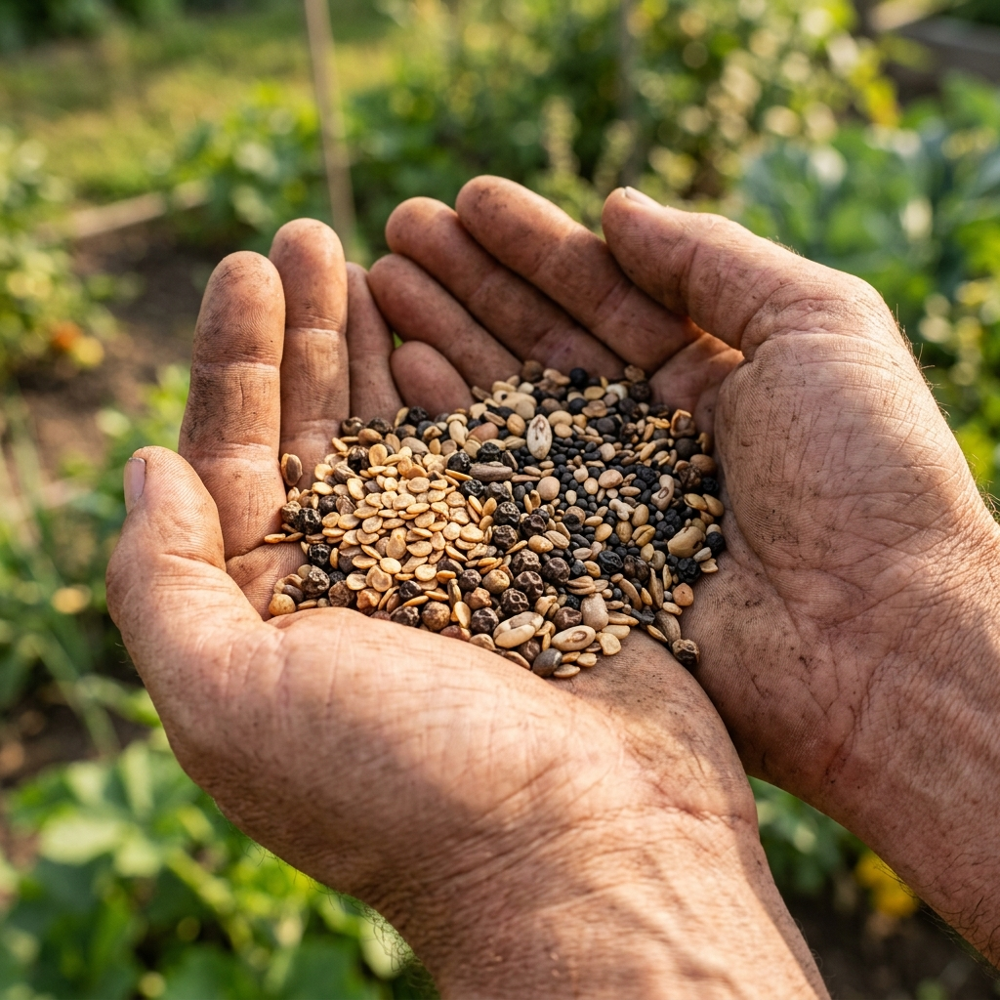
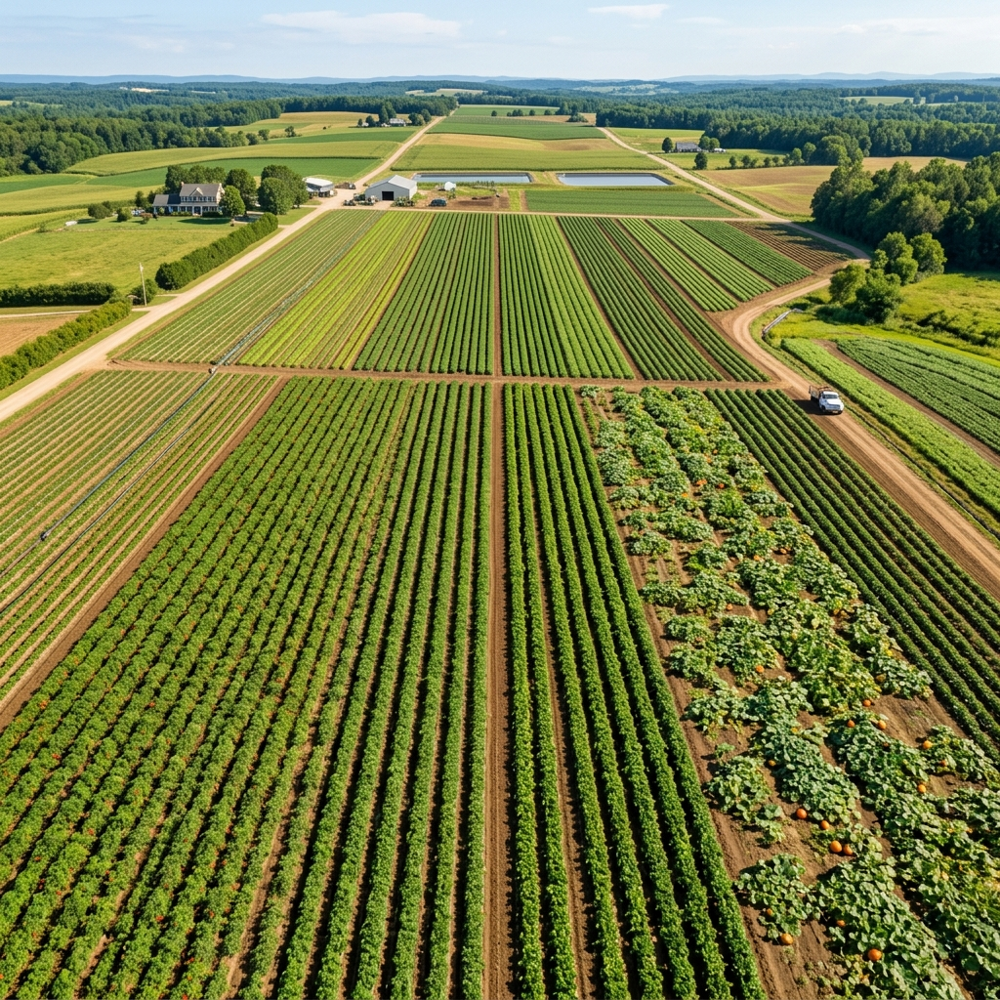

Building a legacy of agricultural excellence, one seed at a time.

With the blessings and inspiration of His Holiness Satguru Sri Parama Hamsa Yogananda, author of "Autobiography of a Yogi," Esha Agri Seeds Pvt. Ltd. was established in 2009 as an ISO 9001 & 2008 certified company.
Headquartered in Hyderabad, India, we were founded with the vision of creating better livelihoods for Indian farmers and all-round success of the farming community through high-quality, high-yielding vegetable hybrids with multiple disease resistance.
Our company has its core strength in vegetable hybrid seeds breeding, production and marketing, supported by professionally qualified and experienced personnel.
From a small team in Hyderabad to a trusted name across multiple Indian states.

Esha Agri Seeds has accomplished success in breeding hybrids for different markets, releasing tailor-made hybrids suitable to different agro-climatic zones of Indian states.
Our chilli hybrids in red dry and fresh green segments are very popular in the market. Tomato and okra hybrids have created a niche in the market. Our gourds, melon, watermelon, carrot, beetroot, cabbage, cauliflower, coriander and hybrid marigold have reached all areas of market.
The states of Andhra Pradesh, Karnataka, Maharashtra, Orissa and Tamil Nadu are our biggest markets. We acknowledge the services of AVRDC, Taiwan, and IIHR, Bangalore in our research program.
Dr. V. S. S. Rao, a senior seed man, serves as mentor of Esha Seeds Pvt Ltd, guiding the company's product development and research programs.
Esha Agri Seeds represented India at the Asian Seed Congress 2016 in Incheon, South Korea (Nov 6-11). At APSA 2015, over 1,000 delegates attended the 23rd Congress, inaugurated by Union Minister Shri Radha Mohan Singh and Shri Muppavarapu Venkaiah Naidu.
Regular field days on F1 hybrids are organized across different marketing zones. Farmers, distributors and dealers participate in Field Day programmes where our product development team showcases high-yielding, better quality hybrids.
Esha Agri Seeds provides Kitchen Garden Kits for growing fresh vegetables at home — packed with essential vitamins, calcium, iron, magnesium, and antioxidants for your overall health.